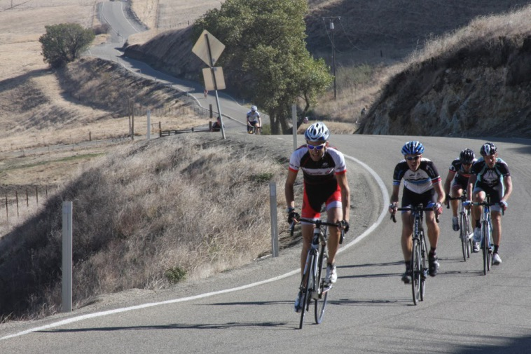

|
 |
 |
|
|
|
|  |
| Group 1 climbs OMG, and Laurens Ten Dam is about to get his "Your KOM has been taken" email... (Alec Proudfoot) |
It was glorious weather for this sixth week of the 2013 Low-Key Hillclimbs as coordinator Kevin Comerford led Low-Key to new ground: Patterson Pass near Livermore. The pass is infamous for its raging headwinds, but the iconic windmills were still as Low-Key began its assault on the Tour of California climb.
Six groups started today, starting with the fastest riders. Bill Bushnell led the way with his own group, riding his hybrid-electric recumbent to a brilliant time of 12:17.
The first group of human-powered riders went next. Nils Takkenen set a ferocious pace from the start as the opening flats played to his strength. However, once the serious climbing began others moved to the front and the pack shattered. Leading the way home was series leader Stefano Profumo, followed very closely by Bill Laddish and Carl Nielson. Carl actually set a KOM on the strava segment, the top 4 riders today all breaking the time of former KOM, Laurens Ten Dam who was racing the Tour of California.
Group 2 was observed directly by your humble reporter. Riders stayed together on the opening flat portion, taking turns yet perhaps not going as fast as they could. But once the climbing began, the effort ramped up. On the final short descent before the "oh-my-god" finish, two riders got away and first one then another rider bridged up. But Steve Fielding pulled away on the OMG, to lead the group, followed by a tight group of Brandon Smith, Shahram Moatazed, and Alexander Komlik.
Group 3 started with a bang as the star tandem team of Paul McKenzie and Paul Chuck went out blazing fast from the start. J* Diesel ended up leading the group just ahead of William Yee. This was the first group with women, containing 3 of the top 4 in the overall standings: Lisa Penzel, McLovely Brown, and Marty Scott finished in that order, Lisa taking the overall lead in the standings.
Group 4 was next. Giles Douglas finished just ahead of a very strong Marty Hyland. Janet Gardner led the strong women's presence in the group.
Group 5 had the advantage of another tandem, as Rich and Kim Hill rode here. Michael Wilkins led the group home convincingly, while Honey (Badger) Brown was the top women, less than a minute down.
In group 6, Low-Key first-timer Nicole Genua finished with an incredible burst of speed to lead the group, proving she could (and should) have ridden with one of the faster groups. She was followed by start line volunteer Frank Drobot and Gregory P Smith.
In the team competition, it was once again Carl Nielson provided the firepower needed to lift Sisters and Misters over The Brown Zone, this time by just 1.4 points. Team CVC was third followed by Pen Velo and LGBRC.
Next week: Lomas Cantadas with the bonus climb of Marin Ave to follow!
Alec Proudfoot, who volunteered and photographed the finish, rode the climb solo before the event and timed himself at 0:35:30.
KOM special mention qualifiers indicated with orange background. Discarded scores are crossed out. Volunteer weeks are indicated with V. Ride credit weeks are indicated with RC. V and RC weeks are equivalent for scoring.
| pl | # | name | team | cat | time | mph | fph | score |
|---|---|---|---|---|---|---|---|---|
| 1 | 126 | Lisa Penzel | The Brown Zone | 45+ | 21:26 | 13.41 | 3452 | 128.18 |
| 2 | 33 | McLovely Brown | The Brown Zone | Mother Of Two | 22:19 | 12.88 | 3315 | 122.19 |
| 3 | 147 | Marty Scott | LGBRC | 55+ | 23:06 | 12.44 | 3203 | 117.29 |
| 4 | 209 | Janet Gardner | Sr's & Mr's of No Mercy | 45+ | 23:47 | 12.08 | 3111 | 113.30 |
| 5 | 21 | Mary Ellen Allen | Sr's & Mr's of No Mercy | 50+++ | 24:01 | 11.97 | 3080 | 112.00 |
| 6 | 301 | Amy Bruski | Sr's & Mr's of No Mercy | 35+ | 24:14 | 11.86 | 3053 | 110.81 |
| 7 | 502 | Honey (Badger) Brown | The Brown Zone | 35+ | 24:31 | 11.72 | 3018 | 109.29 |
| 8 | 606 | Nicole Genua | DMC | 50+ | 24:55 | 11.53 | 2969 | 107.21 |
| 9 | 306 | Chris Davis | LGBRC | 25:37 | 11.22 | 2888 | 103.75 | |
| 10 | 223 | Eva Silverstein | Western Wheelers | 40+ | 25:45 | 11.16 | 2873 | 103.11 |
| 11 | 513 | Sandra King | Equipe Flamme Rouge | 45+ | 27:27 | 10.47 | 2695 | 95.58 |
| 12 | 404 | Heidi Fraser | Cushman & Wakefield Racing | 50+ | 28:13 | 10.19 | 2622 | 92.51 |
| 13 | 609 | Vanessa McDonnell | Team Fremont FFBC p/b Chipotle | 40+ | 31:04 | 9.25 | 2381 | 82.53 |
| 14 | 155 | Darlene Stevenson | Muddy | 40+ | 33:43 | 8.52 | 2194 | 74.89 |
reference time for division Women = 26:25
| pl | # | name | team | cat | time | mph | fph | score |
|---|---|---|---|---|---|---|---|---|
| 1 | 132 | Stefano Profumo | Bike Trip/Symantec | 35+ | 18:03 | 15.92 | 4099 | 125.81 |
| 2 | 409 | Bill Laddish | Team CVC | 40+ | 18:06 | 15.88 | 4087 | 125.40 |
| 3 | 216 | Carl Nielson | Sr's & Mr's of No Mercy | 50+ | 18:08 | 15.85 | 4080 | 125.13 |
| 4 | 49 | David Collet | Pen Velo/Pomodoro | 40+ | 18:17 | 15.72 | 4046 | 123.91 |
| 5 | 603 | Hanns Detlefsen | Sr's & Mr's of No Mercy | 40+ | 18:26 | 15.59 | 4013 | 122.72 |
| 6 | 73 | Chris Furgiuele | Studio Velo Racing | 40+ | 18:32 | 15.51 | 3992 | 121.93 |
| 7 | 119 | Rob Nast | 50+ | 18:55 | 15.19 | 3911 | 119.01 | |
| 8 | 402 | Chris Evans | Pen Velo/Pomodoro | 30+ | 18:57 | 15.17 | 3904 | 118.76 |
| 9 | 108 | Todd Markelz | 35+ | 18:59 | 15.14 | 3897 | 118.51 | |
| 10 | 7 | James Porter | Western Wheelers | Scotty I Need More Power | 19:17 | 14.90 | 3836 | 116.33 |
| 11 | 610 | Alan Nevin | Thirsty Bear Cycling | 40+ | 19:20 | 14.87 | 3827 | 115.97 |
| 12 | 38 | Ciaran Byrne | Sr's & Mr's of No Mercy | 40+ | 19:57 | 14.41 | 3708 | 111.73 |
| 13 | 158 | Nils Tikkanen | Bike Trip/Symantec | Honey Badger | 20:10 | 14.25 | 3668 | 110.31 |
| 14 | 605 | Steve Fielding | 45+ | 20:21 | 14.12 | 3635 | 109.13 | |
| 15 | 327 | Brandon Smith | Team CVC | 25+ | 20:29 | 14.03 | 3612 | 108.29 |
| 16 | 114 | Shahram Moatazedi | LGBRC | 40+ | 20:30 | 14.02 | 3609 | 108.18 |
| 17 | 214 | Alexander Komlik | San Jose Bike Club | 45+ | 20:32 | 14.00 | 3603 | 107.97 |
| 18 | 95 | Mark King | Equipe Flamme Rouge | 45+ | 20:42 | 13.88 | 3574 | 106.94 |
| 19 | 1 | Daniel Connelly | Low-Key | 45+ | 20:44 | 13.86 | 3568 | 106.74 |
| 20 | 302 | Michael Busha | Diablo | 30+ | 20:54 | 13.75 | 3540 | 105.73 |
| 21 | 87 | J* Diesel | Eden Bicycles | 35+ | 21:00 | 13.69 | 3523 | 105.13 |
| 22 | 166 | William Yee | Team CVC | 35+ | 21:02 | 13.66 | 3517 | 104.94 |
| 23 | 220 | Ryan Powell | Team Joe Karbowski | 21:12 | 13.56 | 3490 | 103.96 | |
| 24 | 613 | Jim Torrnece | Eden Bicycles | 50+ | 21:14 | 13.54 | 3484 | 103.77 |
| 25 | 201 | Dino Brown | The Brown Zone | 50+ | 21:30 | 13.37 | 3441 | 102.24 |
| 26 | 91 | Joe Karbowski | Team Joe Karbowski | 35+ | 21:44 | 13.22 | 3404 | 100.94 |
| 27 | 65 | Giles Douglas | 40 TODAY | 21:50 | 13.16 | 3388 | 100.39 | |
| 28 | 406 | Martin Hyland | Diablo | 55+ | 21:53 | 13.13 | 3381 | 100.12 |
| 29 | 96 | Terrance Kloeckl | Last Chosen | 50+ | 22:00 | 13.06 | 3363 | 99.49 |
| 30 | 122 | Bart Niechwiej | 35+ | 22:07 | 12.99 | 3345 | 98.87 | |
| 31 | 504 | Philip Clark | 30+ | 22:30 | 12.77 | 3288 | 96.87 | |
| 32 | 601 | David De Santis | 50+ | 22:32 | 12.75 | 3283 | 96.70 | |
| 33 | 608 | FranksMasterson | Pen Velo/Pomodoro | 60+ | 22:58 | 12.51 | 3221 | 94.54 |
| 34 | 135 | Mihai R. | 30+ | 23:10 | 12.41 | 3193 | 93.57 | |
| 35 | 36 | Nic Brummell | Atlas | 50+ | 23:15 | 12.36 | 3182 | 93.18 |
| 36 | 127 | Ramon Periquet | Team CVC | 50+ | 23:18 | 12.33 | 3175 | 92.94 |
| 37 | 614 | Michael Wilkins | Team batson | 50+ | 23:37 | 12.17 | 3133 | 91.46 |
| 38 | 37 | Scott Byer | 45+ | 23:49 | 12.07 | 3106 | 90.55 | |
| 39 | 400 | Michael Andalora | Bike Trip/Symantec | 60+ | 24:20 | 11.81 | 3040 | 88.28 |
| 40 | 326 | Jeff Shute | 35+ | 24:32 | 11.71 | 3015 | 87.42 | |
| 40 | 328 | Ray Smith | Team CVC | 55+ | 24:32 | 11.71 | 3015 | 87.42 |
| 42 | 407 | Brandon Iles | 30+ | 24:45 | 11.61 | 2989 | 86.52 | |
| 43 | 125 | Frank Paysen | autonomous masochist | 50+ | 25:29 | 11.28 | 2903 | 83.57 |
| 44 | 130 | Mark Powers | Pen Velo/Pomodoro | 55+ | 25:50 | 11.13 | 2864 | 82.23 |
| 45 | 66 | Pierre Doussiere | My LowRacer and Myself | 50+ | 26:10 | 10.98 | 2827 | 80.99 |
| 46 | 611 | Jeffrey Opp | 30+ | 26:23 | 10.89 | 2804 | 80.20 | |
| 47 | 205 | Frank Drobot | Team Djament | 60+ | 26:24 | 10.89 | 2802 | 80.14 |
| 48 | 71 | Stephen Fong | CyclePath Racing | 0 | 26:36 | 10.80 | 2781 | 79.43 |
| 49 | 230 | Kris McQueen | Diablo | 35+ | 26:48 | 10.72 | 2760 | 78.72 |
| 50 | 150 | Gregory P Smith | Zombie Raccoon | 35+ | 26:53 | 10.69 | 2752 | 78.43 |
| 51 | 602 | Bernard Demai | 65+ | 27:14 | 10.55 | 2717 | 77.24 | |
| 52 | 22 | Rich Allen | Sr's & Mr's of No Mercy | 50++++ | 27:16 | 10.54 | 2713 | 77.13 |
| 53 | 143 | Koushik Sampath | LGBRC | 25+ | 27:59 | 10.27 | 2644 | 74.79 |
| 54 | 151 | Kevin M. Smith | LGBRC | 50+ | 28:05 | 10.23 | 2634 | 74.47 |
| 55 | 218 | Marco Palmeri | 30+ | 28:18 | 10.16 | 2614 | 73.80 | |
| 56 | 600 | Ben Blizard | Blizardo Racing Co-Op | 35+ | 28:34 | 10.06 | 2590 | 72.98 |
| 57 | 604 | Rich Deyoung | Team CVC | 70+ | 34:53 | 8.24 | 2121 | 57.58 |
| 58 | 200 | Michael Ahern | LGBRC | 45+ | 35:03 | 8.20 | 2111 | 57.26 |
reference time for division Men = 21:54
| pl | # | name | team | cat | time | mph | fph | score |
|---|---|---|---|---|---|---|---|---|
| 1 | 46 | Paul Chuck | Sr's & Mr's of No Mercy | 55+ | 22:29 | 12.78 | 3290 | 96.96 |
| 410 | Paul McKenzie | Sr's & Mr's of No Mercy | 55+ | |||||
| 2 | 82 | Kim Hill | LGBRC | 40+ | 25:19 | 11.35 | 2922 | 94.72 |
| 83 | Rich Hill | LGBRC | 45+ | |||||
| 3 | 12 | Will von Kaenel | LGBRC | 55+ | 30:40 | 9.37 | 2412 | 75.45 |
| 13 | Lynn von Kaenel | LGBRC | Stoker |
| pl | # | name | team | cat | time | mph | fph | score |
|---|---|---|---|---|---|---|---|---|
| 1 | 6 | Bill Bushnell | Low-Key | Hors | 12:17 | 23.40 | 6023 | 104.31 |
reference time for division Hybrid Electric = 12:43
| pl | team | score | riders |
|---|---|---|---|
| 1 | Sr's & Mr's of No Mercy | 361.15 | Carl Nielson, Hanns Detlefsen, Ciaran Byrne, Paul Chuck, Paul McKenzie, Janet Gardner, Mary Ellen Allen, Amy Bruski, Rich Allen |
| 2 | The Brown Zone | 359.67 | Lisa Penzel, Dino Brown, McLovely Brown, Honey (Badger) Brown |
| 3 | Team CVC | 338.63 | Bill Laddish, Brandon Smith, William Yee, Ramon Periquet, Ray Smith, Rich Deyoung |
| 4 | Pen Velo/Pomodoro | 337.21 | David Collet, Chris Evans, FranksMasterson, Mark Powers |
| 5 | LGBRC | 329.22 | Shahram Moatazedi, Marty Scott, Kim Hill, Rich Hill, Chris Davis, Koushik Sampath, Kevin M. Smith, Will von Kaenel, Lynn von Kaenel, Michael Ahern |
| 6 | Bike Trip/Symantec | 324.40 | Stefano Profumo, Nils Tikkanen, Michael Andalora |
| 7 | 317.77 | Todd Markelz, Giles Douglas, Bart Niechwiej, Philip Clark, Mihai R., Scott Byer, Jeff Shute, Brandon Iles | |
| 8 | Diablo | 284.57 | Michael Busha, Martin Hyland, Kris McQueen |
| 9 | Western Wheelers | 219.44 | James Porter, Eva Silverstein |
| 10 | Low-Key | 211.05 | Bill Bushnell, Daniel Connelly |
| 11 | Eden Bicycles | 208.90 | J* Diesel, Jim Torrnece |
| 12 | Team Joe Karbowski | 204.90 | Ryan Powell, Joe Karbowski |
| 13 | Equipe Flamme Rouge | 202.53 | Mark King, Sandra King |
| 14 | Studio Velo Racing | 121.93 | Chris Furgiuele |
| 15 | Thirsty Bear Cycling | 115.97 | Alan Nevin |
| 16 | San Jose Bike Club | 107.97 | Alexander Komlik |
| 17 | DMC | 107.21 | Nicole Genua |
| 18 | Last Chosen | 99.49 | Terrance Kloeckl |
| 19 | Atlas | 93.18 | Nic Brummell |
| 20 | Cushman & Wakefield Racing | 92.51 | Heidi Fraser |
| 21 | Team batson | 91.46 | Michael Wilkins |
| 22 | autonomous masochist | 83.57 | Frank Paysen |
| 23 | Team Fremont FFBC p/b Chipotle | 82.53 | Vanessa McDonnell |
| 24 | My LowRacer and Myself | 80.99 | Pierre Doussiere |
| 25 | Team Djament | 80.14 | Frank Drobot |
| 26 | CyclePath Racing | 79.43 | Stephen Fong |
| 27 | Zombie Raccoon | 78.43 | Gregory P Smith |
| 28 | Muddy | 74.89 | Darlene Stevenson |
| 29 | Blizardo Racing Co-Op | 72.98 | Ben Blizard |